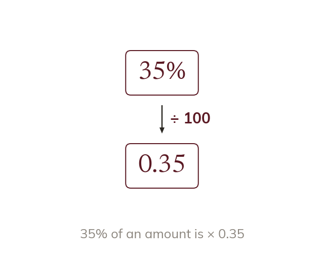

The multiplier
A percentage multiplier makes a percentage one multiplication. For p% of an amount, multiply by p100.
A percentage multiplier turns a percentage change into a single multiplication. To find p% of an amount, multiply by p100 - so 35% of an amount is the same as multiplying by 0.35.